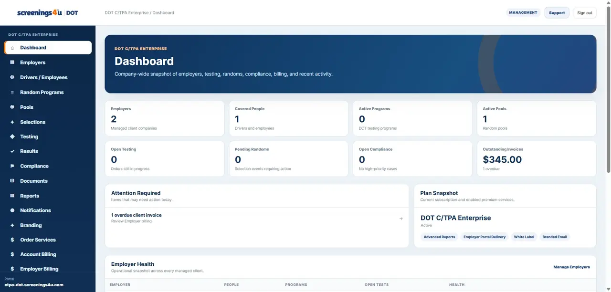

Workforce dashboard
See your employees, open tasks, programs, testing activity and compliance status.
One subscription gives your organization the software to oversee DOT compliance and non-DOT workforce programs, testing, employees, documents and reporting.

Manage your people and programs in a central workspace rather than across disconnected systems.
See your employees, open tasks, programs, testing activity and compliance status.
Track regulated testing, random programs, driver requirements and agency workflows.
Manage workplace screening programs and non-DOT testing without a second subscription.
Organize workforce documents, acknowledgments and audit-ready records.
Coordinate testing workflows and review workforce activity in one place.
Manage your teams, workforce programs and operational workflows.
Keep your existing Workforce plan pricing and checkout. Non-DOT tools are included as an added benefit.
Manage your employees, DOT testing, records and operational compliance.
View Employer plans →Oversee multiple employer clients, testing, reporting and program administration.
View C/TPA plans →Maintain FMCSA program requirements, random testing and workforce compliance.
View Owner-Operator plans →Existing Employer and C/TPA billing remains monthly. Existing Owner-Operator billing remains annual.
Start with your existing Workforce subscription plan and get the tools to manage DOT and non-DOT programs.